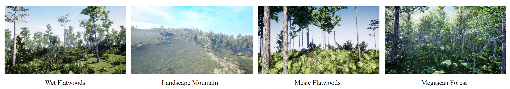
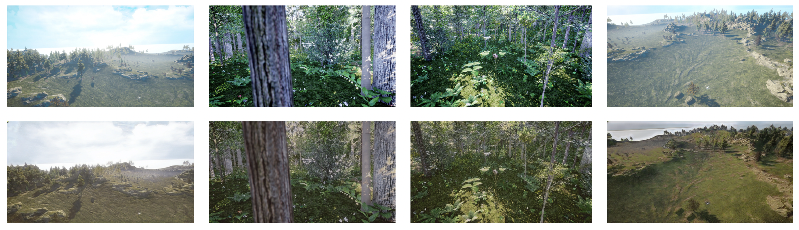

Data Augmentation Pipeline for Enhanced UAV Surveillance
1Drexel University, Philadelphia, PA, USA
International Conference on Pattern Recognition (ICPR) 2024 · Springer LNCS
Abstract
The growing use of Unmanned Aerial Vehicles (UAVs) presents considerable safety and security challenges, requiring improved capabilities for drone detection. However, collecting real-world data is costly, time consuming, and in some cases subject to rules and regulations. This paper introduces a novel two-phase data augmentation approach aimed at improving the accuracy and efficiency of long-range drone detection systems. The first phase generates synthetic data using Unreal Engine to increase the diversity and richness of the dataset. We then employ a Cycle-consistent Generative Adversarial Network (CycleGAN) to translate these synthetic images into more realistic representations, bridging the gap between synthetic and real datasets. To evaluate the pipeline, we trained the YOLO detector under three scenarios — real data only, real + synthetic data, and real + CycleGAN-translated synthetic data — and assessed each on unseen real datasets. Our findings show a marked improvement in drone detection when training includes both synthetic and translated images, with the most significant gains when real data is augmented with translated data.
Overview
Long-range UAV detection is hard: drones are often small, low-resolution, and difficult to distinguish from cluttered backgrounds, while annotated real data is expensive to collect. We address this with a cost-effective augmentation pipeline that (1) generates high-fidelity synthetic drone imagery in vegetated environments, and (2) closes the “reality gap” via unsupervised image-to-image translation, automating segmentation and bounding-box labeling along the way.
Method
The pipeline has three stages:
- Synthetic data generation — Unreal Engine + AirSim render drones across four vegetated environments (Landscape Mountain, Wet Flatwoods, Mesic Flatwoods, and Megascan Forest) with randomized pose and range.
- Domain adaptation — CycleGAN performs unsupervised synthetic-to-real translation, requiring no paired data.
- Drone detection — YOLOv8m is trained on real data augmented with synthetic and translated images, then evaluated on unseen sets.



Datasets
- Real (training base): Drone vs. Bird (DvB), split into DvB50 (~50%) and DvB80 (~80%) training subsets.
- Synthetic (UE): 10,000 images — 5 drone models × 4 environments × 500 images.
- CycleGAN training: 6,500 synthetic + 5,500 real images.
- Evaluation (unseen, real): DetFly (7,346 imgs), Drone Detection (1,793), UAV Detect (4,409), and New Batch.
Results
Inference results of YOLOv8m trained on six dataset compositions and evaluated on four unseen real datasets. Augmenting real data (DvB) with Unreal-Engine synthetic data, and especially with CycleGAN-translated data, consistently improves long-range drone detection. Bold marks the best score per column within each DvB50 and DvB80 group.
| Trained model | DetFly | Drone Detection | UAV Detect | New Batch | ||||
|---|---|---|---|---|---|---|---|---|
| mAP50 | mAP50-95 | mAP50 | mAP50-95 | mAP50 | mAP50-95 | mAP50 | mAP50-95 | |
| DvB50 | 0.462 | 0.220 | 0.660 | 0.282 | 0.580 | 0.288 | 0.3825 | 0.1800 |
| DvB50 + UE | 0.475 | 0.240 | 0.660 | 0.282 | 0.574 | 0.306 | 0.3904 | 0.2087 |
| DvB50 + UE_CycleGAN | 0.524 | 0.262 | 0.614 | 0.263 | 0.601 | 0.334 | 0.3954 | 0.1957 |
| DvB80 | 0.461 | 0.226 | 0.645 | 0.292 | 0.610 | 0.328 | 0.3774 | 0.2237 |
| DvB80 + UE | 0.487 | 0.238 | 0.677 | 0.300 | 0.575 | 0.304 | 0.4100 | 0.2161 |
| DvB80 + UE_CycleGAN | 0.510 | 0.246 | 0.694 | 0.311 | 0.612 | 0.352 | 0.4173 | 0.2455 |
Table 1: Inference results on DetFly, Drone Detection, UAV Detect, and New Batch. Best per column within each group in bold.
Across all four test sets, adding CycleGAN-translated synthetic data yields the strongest detection performance — confirming that bridging the reality gap, not just adding synthetic data, drives the gains.

Code & Data
Code, configuration files, and reproducibility instructions are being added to the GitHub repository.
Citation
@inproceedings{arezoomandan2024uav,
title = {Data Augmentation Pipeline for Enhanced UAV Surveillance},
author = {Arezoomandan, Solmaz and Klohoker, John and Han, David},
editor = {Antonacopoulos, Apostolos and Chaudhuri, Subhasis and
Chellappa, Rama and Liu, Cheng-Lin and Bhattacharya, Saumik
and Pal, Umapada},
booktitle = {Pattern Recognition (ICPR 2024)},
series = {Lecture Notes in Computer Science},
volume = {15306},
pages = {366--380},
year = {2024},
publisher = {Springer Nature Switzerland},
address = {Cham},
doi = {10.1007/978-3-031-78172-8_24},
url = {https://doi.org/10.1007/978-3-031-78172-8_24}
}
Contact
Solmaz Arezoomandan — sa3747@dragons.drexel.edu